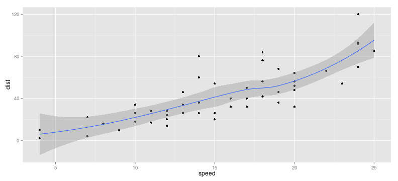
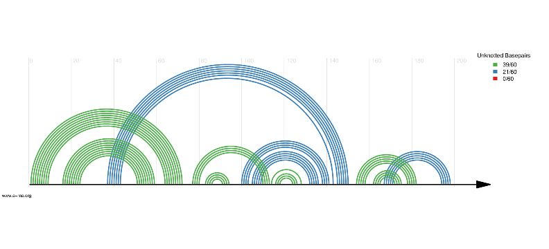

Using R (and friends) in maths
Paolo Masulli
QGM Friday Lunch Seminar, 27 June 2014
What are we talking about?
Quick examples
x <- 1:6 # range of integers
y <- c(1,2)
x^2## [1] 1 4 9 16 25 36sin(x)## [1] 0.8415 0.9093 0.1411 -0.7568 -0.9589 -0.2794x+y## [1] 2 4 4 6 6 8Did you say plots?
library(ggplot2)
qplot(speed, dist, data = cars) + geom_smooth()

A scatterplot of cars
Arc diagrams
We can draw arc diagrams for RNA secondary structure, defining them as parenthesized strings (e.g. ((..().)))

Arc diagram
Presenting data and results: R Markdown
- It’s a plain text formatting syntax, like a simplified HTML.
- Easier than LaTeX. Far fewer commands to remember, e.g. to write bullet points, just begin with a dash “
-” instead of\begin{itemize}and\item; - It can include LaTeX code e.g. \(f(k)={n \choose k}p^{k}(1-p)^{n-k}\)
- It can include R code which gets executed when transforming the R Markdown into HTML/PDF/slides. (using
knitr). It takes one click.
Example workflow

Example: this presentation
- This presentation was written in R Markdown.
- Let’s peek at the source code.
Example outputs
I can transform my presentation in different formats using knitr, pandoc and other commands - HTML - PDF
Eye-candy
A different kind of plot: pollution in the US (Source: Kamal, Exploratory Data Analysis Coursera class, May 2014)
{kind=link}